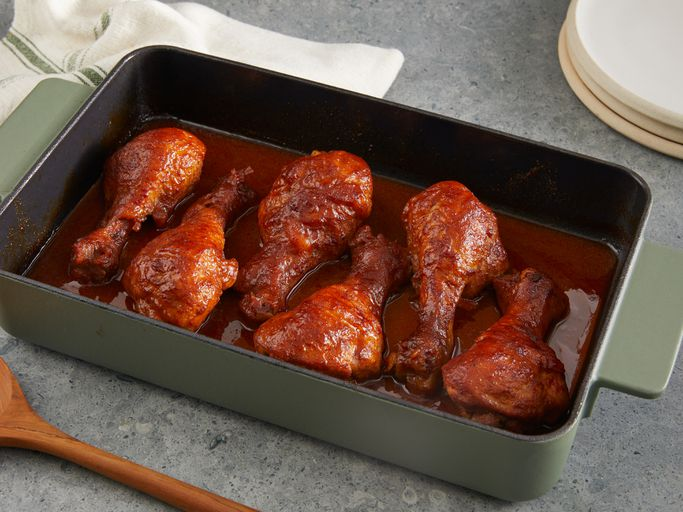

Shake and Bake Chicken Thighs
Home

Description
These baked BBQ chicken legs are tender and juicy with a deliciously crispy skin. An easy homemade BBQ sauce adds sticky goodness to these drumsticks that are baked in the oven instead of grilled. Serve with mashed potatoes or seasoned rice and drizzle the BBQ sauce over top.
Top Tips for Baked BBQ Chicken Legs
Ingredients
Steps
- Step 1 : Assemble ingredients, preheat oven to 400 degrees F (200 degrees C), and place drumsticks in a 7x11-inch baking dish.
- Step 2 : Whisk ketchup, vinegar, water, brown sugar, butter, salt, Worcestershire sauce, mustard, and chili powder together in a bowl; pour mixture over drumsticks. Cover with aluminum foil.
- Step 3 : Bake in the preheated oven until no longer pink at the bone and the juices run clear, about 1 hour, turning chicken about halfway through. Uncover during the last few minutes of baking to let the skin crisp up and the sauce caramelize. An instant-read thermometer inserted near the bone should read 165 degrees F (74 degrees C).
- Step 4 : Serve hot and enjoy!